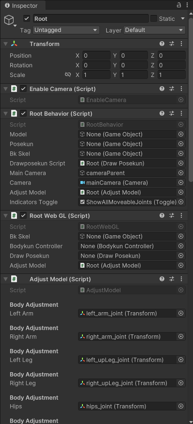

Project Overview
This documentation provides a comprehensive overview of the Unity project structure and the key GameObjects in the main LoadAll scene.
Table of Contents
Project Structure
The Unity project follows a well-organized folder structure designed for pose manipulation and 3D character interaction:
UnityProject/
│
├── Assets/
│ ├── Animations/ # Character pose animations
│ │ └── PoseManiacs/ # Pre-built pose animations from PoseManiacs
│ │
│ ├── CSV/ # 2D pose data for front-end integration
│ │ ├── Old/ # Legacy CSV files (deprecated)
│ │ └── Posemaniacs/ # PoseManiacs 2D coordinate data
│ │
│ ├── Editor/ # Custom Unity Editor scripts and tools
│ │
│ ├── Materials/ # Rendering materials
│ │ └── HandEditorSprites/ # UI sprite materials for hand editor
│ │
│ ├── Models/ # 3D character models (.fbx, .obj, etc.)
│ │
│ ├── Plugins/ # Platform-specific plugins
│ │ ├── iOS/ # iOS build dependencies
│ │ └── WebGL/ # WebGL build dependencies
│ │
│ ├── Prefabs/ # Reusable GameObject templates
│ │ └── UI Prefabs/ # User interface prefabs (windows, buttons)
│ │
│ ├── Resources/ # Runtime-loaded assets (PoseLibrary with AnimationClips)
│ ├── Scenes/ # Unity scene files
│ └── Scripts/ # C# scripts for game logic
│
├── Builds/ # Compiled application outputs
│ ├── iOS/ # iOS build artifacts
│ └── WebGL/ # WebGL build artifacts
LoadAll Scene Overview
The LoadAll scene contains the core GameObjects that power the pose manipulation system. Each GameObject serves a specific purpose in the application’s functionality.
Scene Hierarchy
|  | |
|---|---|
| Scene hierarchy overview | Inspector panel details |
You can explore each GameObject using Unity’s Inspector panel (shown on the right) to view their components and configuration.
Core GameObjects Overview
The table below provides an overview of the core GameObjects in the LoadAll scene. Click on the links to jump to their detailed descriptions.
| GameObject | Purpose | Link |
|---|---|---|
| Root | Central controller that manages scene-wide functionality and coordinates between systems. | View Details |
| Directional Light | Provides global directional lighting to simulate sunlight and ensure proper scene illumination. | View Details |
| EventSystem | Handles all UI interactions, mouse events, and touch input. | View Details |
| CameraParent | Parent container for camera hierarchy, enabling grouped camera movements and transformations. | View Details |
| mainCamera | Primary scene camera responsible for rendering the main view. | View Details |
| PosekunCamera | Specialized camera dedicated to rendering the pose reference character (Posekun). | View Details |
Core GameObjects
Root
Purpose: Central controller that manages scene-wide functionality and coordinates between different systems.
Key Components:
Enable Camera Script- Controls camera activation statesRoot Behaviour Script- Main application logic controllerRoot WebGL Script- WebGL-specific functionalityAdjustModel Script- Model transformation and scalingDraw Posekun Script- Renders the pose visualization characterScreenshot Controller Script- Handles screenshot capture functionalityAdd FBX Controller Script- Manages FBX model import and integrationBodykun Controller Script- Controls the main character body manipulation
Directional Light
Purpose: Provides global directional lighting to simulate sunlight and ensure proper scene illumination.
Key Components:
Light(Type: Directional) - Main lighting source for the scene
EventSystem
Purpose: Unity’s input management system that handles all UI interactions, mouse events, and touch input.
Key Components:
EventSystem- Core input event detection and processingStandaloneInputModule- Handles keyboard, mouse, and controller input for desktop platforms
Camera System
CameraParent
Purpose: Parent container for camera hierarchy, enabling grouped camera movements and transformations.
Key Components:
Camera Controller Script- Manages camera movement, rotation, and zoomPose Bounding Box Script- Calculates and displays pose boundaries
mainCamera
Purpose: Primary scene camera responsible for rendering the main view and supporting transform gizmo interactions.
Key Components:
Camera- Unity’s camera component for scene renderingTransform Gizmo Script- Enables 3D manipulation gizmos for object transformation
PosekunCamera
Purpose: Specialized camera dedicated to rendering the pose reference character (Posekun).
Key Components:
Camera- Secondary camera for pose character rendering
User Interface
Canvas
Purpose: Root container for all UI elements, providing the foundation for the user interface system.
SideMenu
Purpose: Debug panel that displays available poses in a scrollable menu format.
Note: Primarily used for development and debugging purposes. Contains script to autopopulate PoseLibrary.
PC
Purpose: Desktop-style UI panel containing various control buttons and options.
Note: Primarily used for development and debugging purposes.
Interactive Elements
HandEditorContents
Purpose: Prefab container for the hand pose editing interface.
Important: Keep this GameObject inactive until needed for hand editing functionality.
Indicator
Purpose: Template prefab for pose point visualization markers.
Critical: This prefab is referenced by multiple systems - do not remove or relocate.
JointIndicators
Purpose: Template prefab for animated joint indicators that highlight active pose points.
Critical: This prefab is essential for pose point feedback - maintain its position in the hierarchy.
Development Notes
Important Prefab Dependencies
- Indicator and JointIndicators prefabs are critical to the pose system.
- These prefabs must remain in their current hierarchy positions.
- Multiple scripts reference these prefabs at runtime.
Debug Elements
SideMenuandPCGameObjects are development tools.- These can be disabled in production builds.
- Keep them for testing and debugging pose functionality.
Next Steps
To learn more about the project:
- Explore the Classes documentation for detailed script information.
- View Topics for specific feature implementations.
- Return to Getting Started for setup instructions.